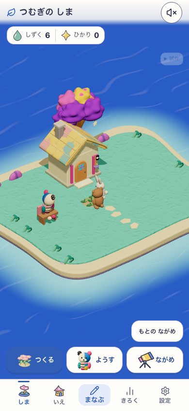
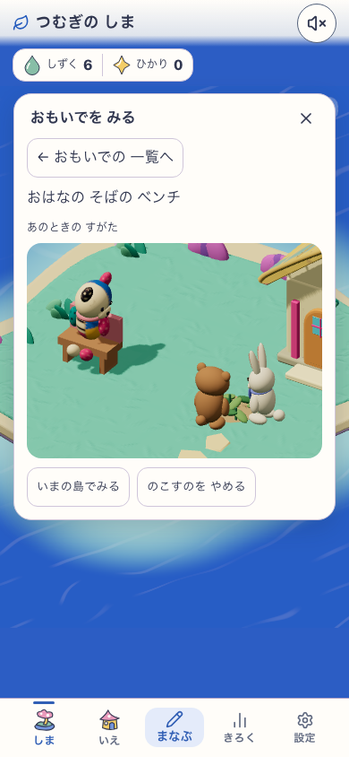
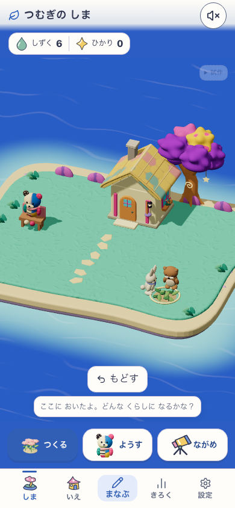
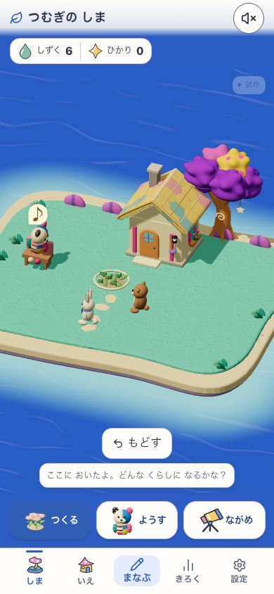

DEV 5223 / island-life-discovery-a-live-relations-v1 / HEAD e0aac1b + working tree / source 78fa1893fc823eb0a4837d7ce879b407bd5e1ceac386f4faa4426b03afa0ee80。明示所有fixture、Human N=0。release全体は未認定。





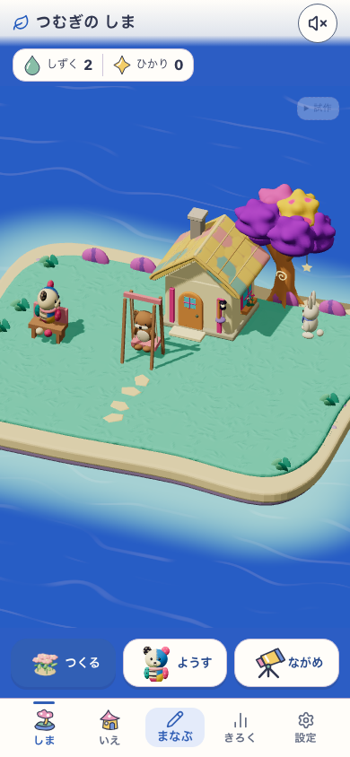
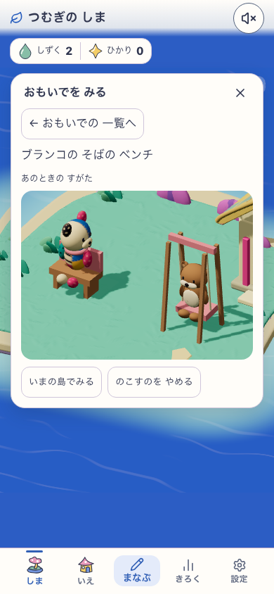
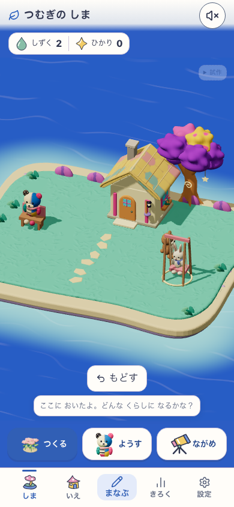
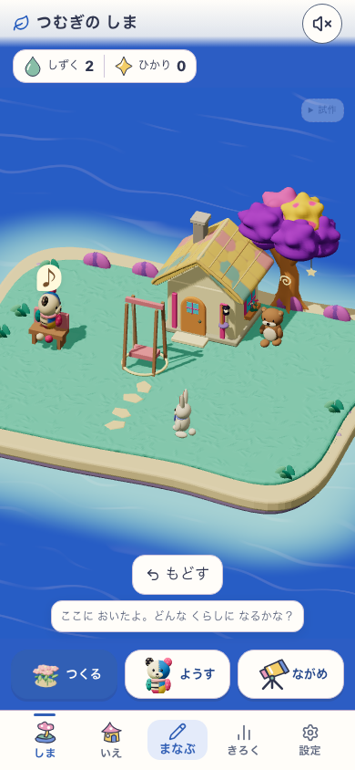

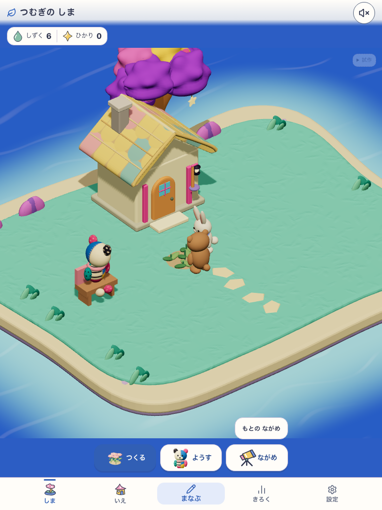
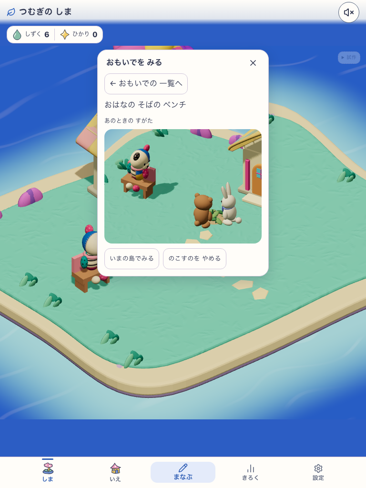
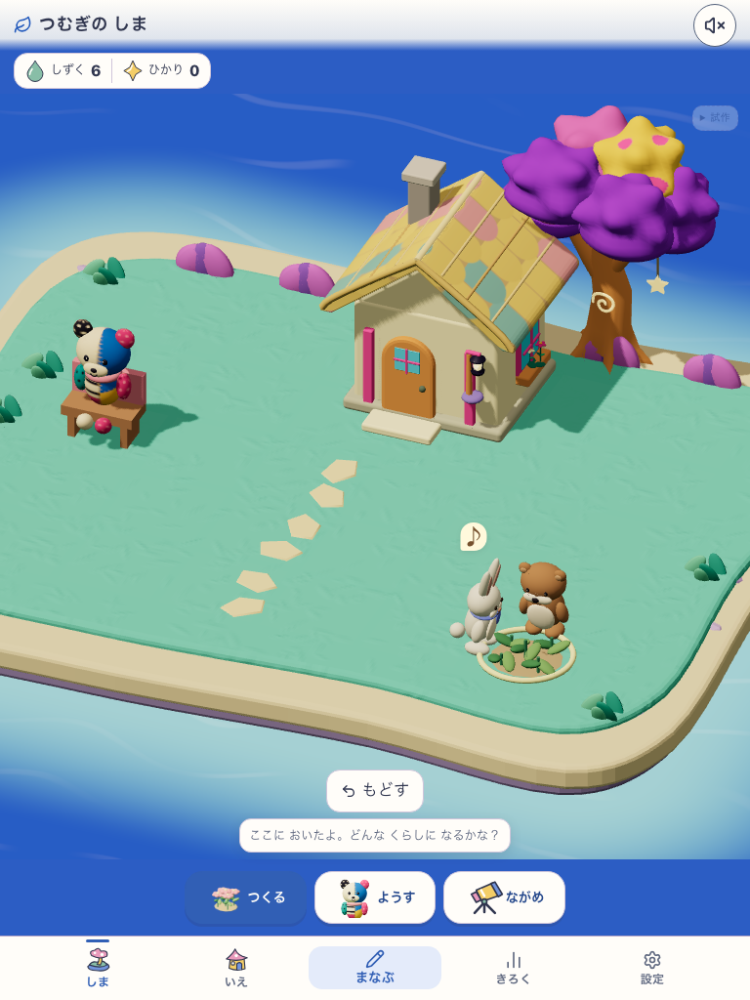
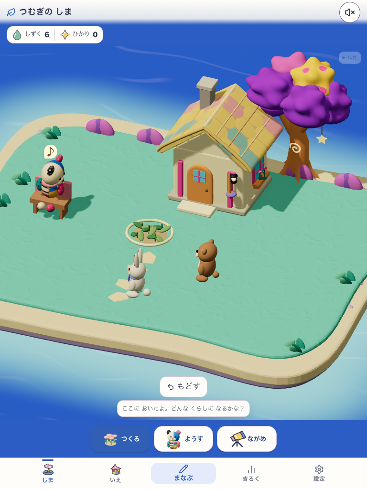
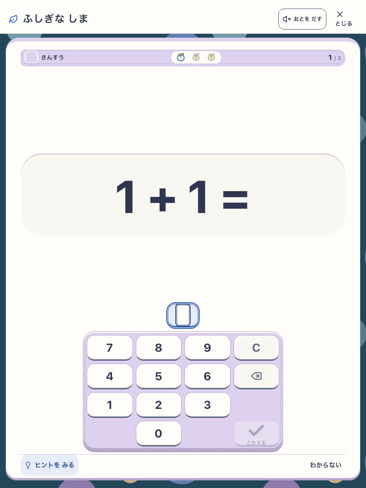
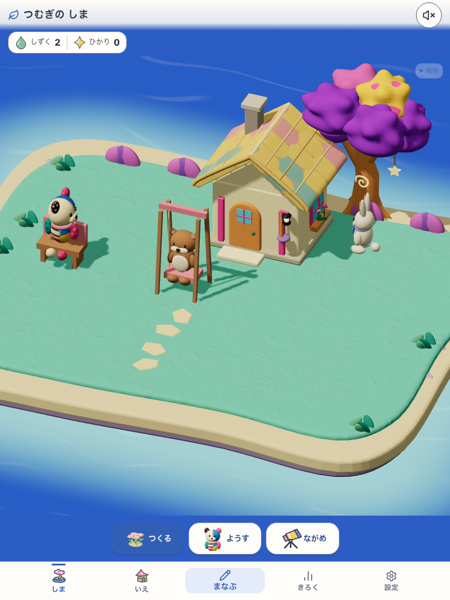
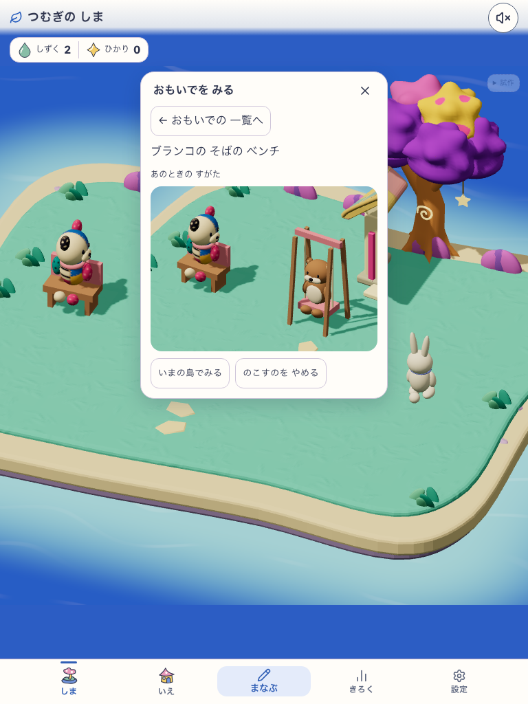
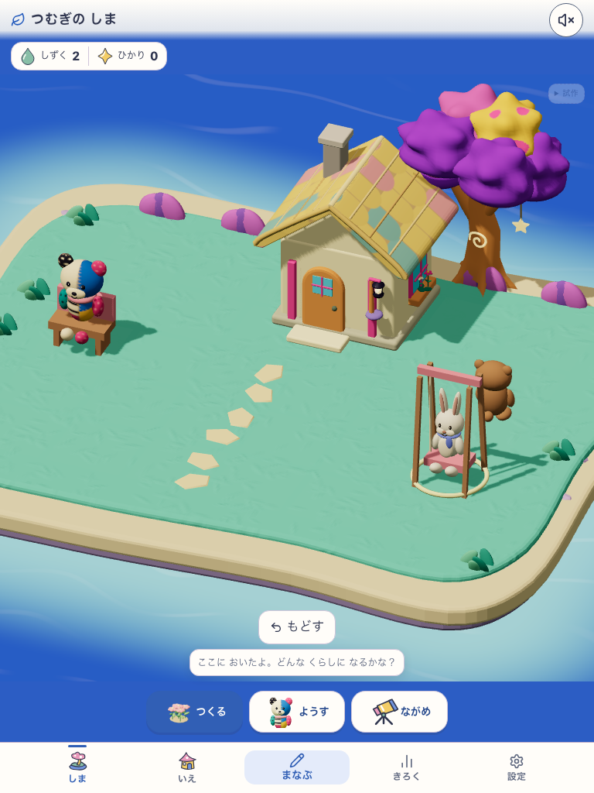
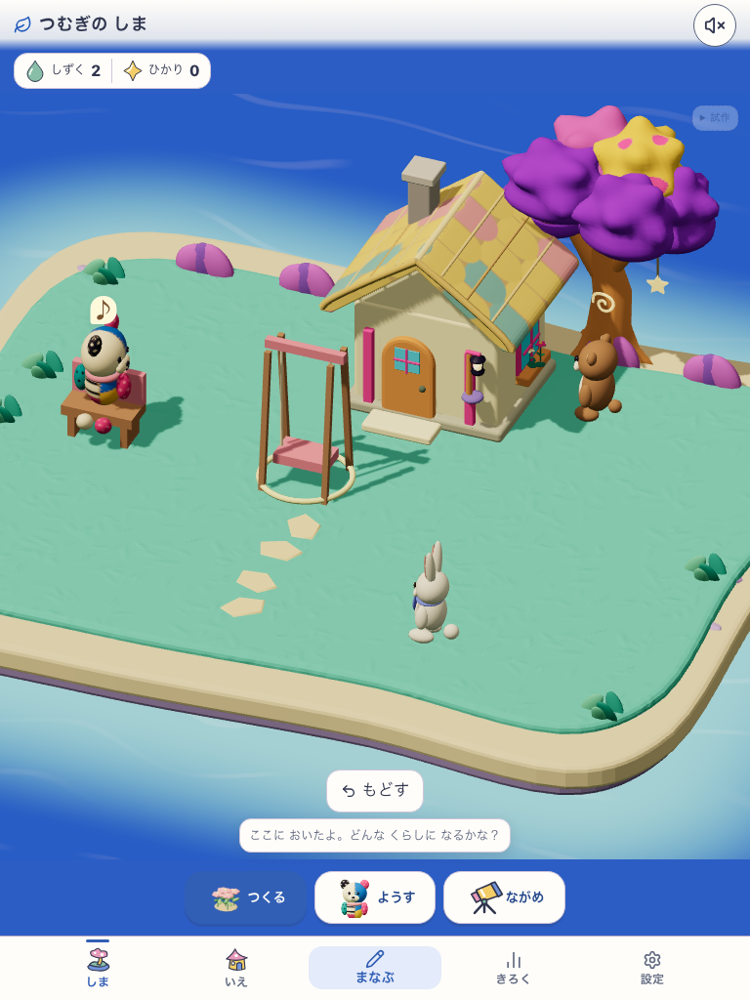